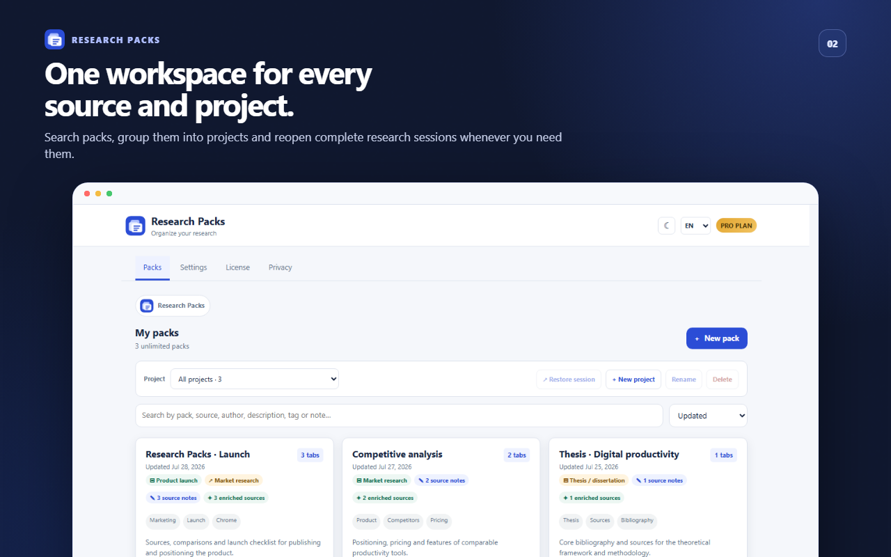
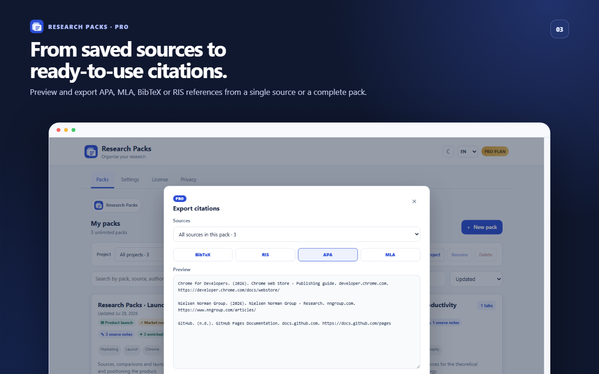
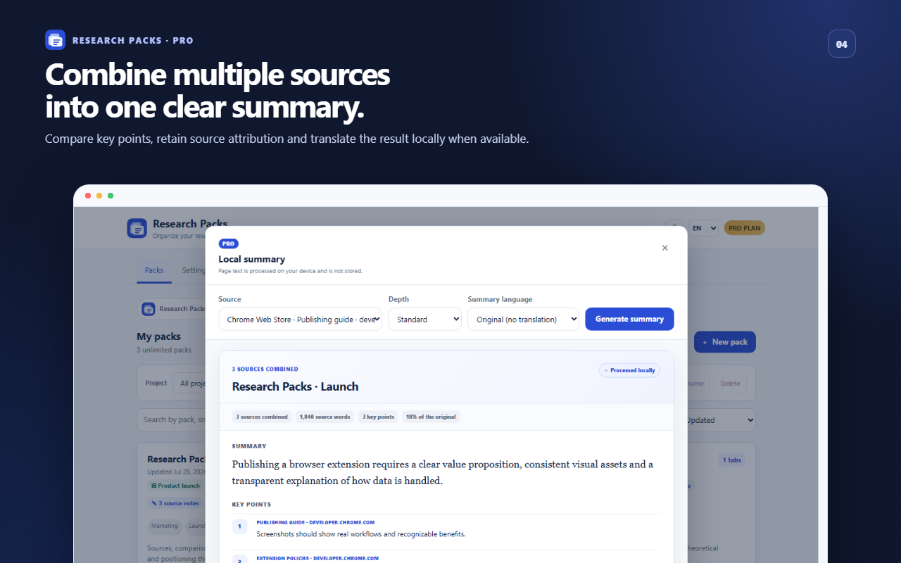
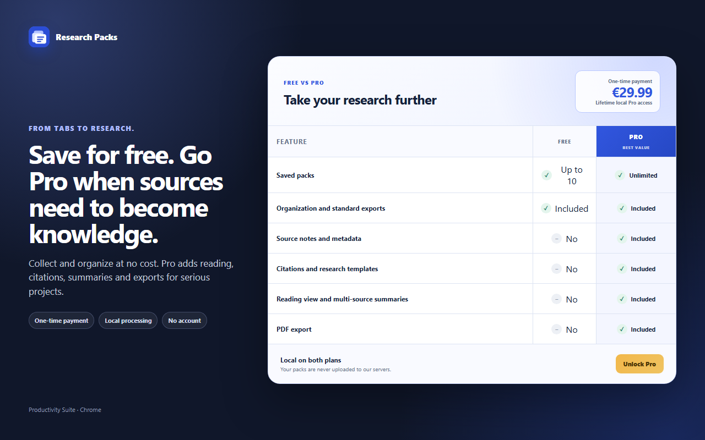

Save useful tabs
Select tabs, name a pack and add notes that make it useful later.
Research Packs
Save selected tabs as local packs, add notes and tags, return to the full context later, and export your work when you need it.




Select tabs, name a pack and add notes that make it useful later.
Search, sort and reopen a whole set of sources from one dashboard.
Create Markdown, CSV or HTML exports on your device.
A calmer research workflow
Select the tabs worth keeping and give the pack a name that makes sense to you.
Use notes and tags so every source still has meaning when you come back later.
Reopen the full set when the work resumes, or take a local copy with you.
Free vs Pro
The essential pack workflow stays free. Pro adds the tools that help you read, understand, cite and reuse what you save.
Get Research Packs Pro
Install the extension, open its settings and go to License. The Upgrade to Pro button opens the secure ExtensionPay checkout and the extension refreshes your licence afterwards.
Local research
Pack names, URLs, notes and tags remain in your Chrome local extension storage.